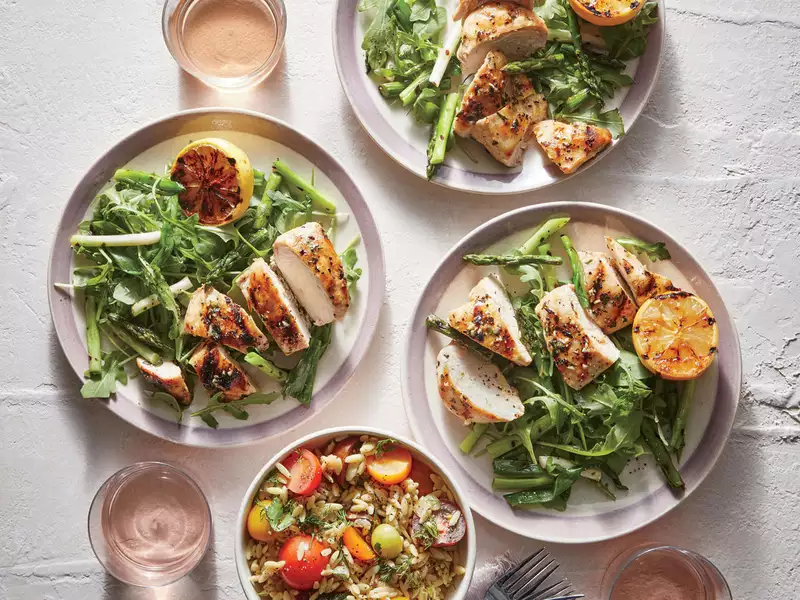

Grilled Chicken Lemon Salad

Description
With a whopping 40g of protein, this simple salad is everything you need
come lunchtime. Toss chicken and lemons on your grill pan (or outdoor
grill) while making dinner, and pack it for tomorrow's lunch.
Ingredients
- 2 medium lemons
- 1 1/2 tablespoons chopped fresh oregano
- 1 1/2 tablespoons canola oil
- 2 teaspoons minced garlic
- 4 (6-oz.) skinless, boneless chicken breasts
- Cooking spray
- 3/4 teaspoon kosher salt, divided
- 1/2 teaspoon freshly ground black pepper, divided
- 8 ounces thin asparagus
- 8 green onions, trimmed
- 2 tablespoons extra-virgin olive oil
- 1 1/2 tablespoons white wine vinegar
- 1 (5-oz.) pkg. arugula
Steps
-
Step 1
Grate lemon rinds to equal 2 teaspoons; halve lemons crosswise and
reserve. Combine rind, oregano, canola oil, and garlic in a large bowl.
Add chicken; toss to coat.
-
Step 2
Heat a grill pan over medium-high. Coat pan with cooking spray. Sprinkle
chicken with 1/4 teaspoon salt and 1/4 teaspoon pepper. Add chicken to
pan; cook 5 minutes on each side or until done. Add lemon halves to pan,
cut sides down; cook 4 minutes. Remove chicken and lemons from pan. Cut
chicken into slices.
-
Step 3
Coat asparagus and green onions with cooking spray; add to pan. Cook 3
to 4 minutes or until charred and tender, tuning occasionally. Cut
asparagus and green onions into 2-inch pieces.
-
Step 4
Combine remaining 1/2 teaspoon salt, remaining 1/4 teaspoon pepper,
olive oil, and vinegar in a large bowl. Add asparagus, green onions, and
arugula; toss. Serve with chicken and lemon halves.